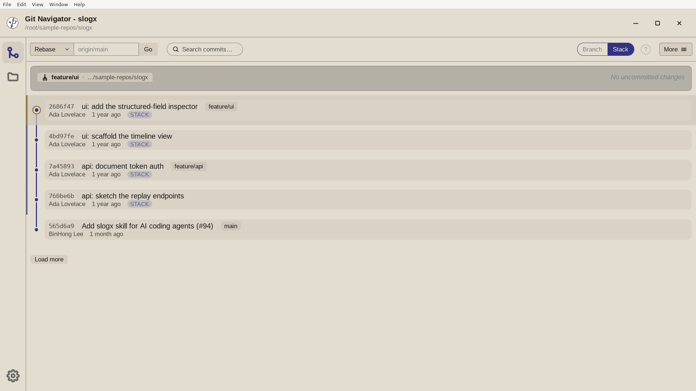

Stacks built from real branches
Git Navigator models a stack the way your team reviews it: each layer is a branch that can hold several commits — not one branch per commit. Push a whole stack respecting each branch's remote, diff a commit against the branch below it, and pull the current branch onto the branch it is stacked on.

How stacking works now
A layer is a branch, not a commit
A stack layer is a branch that can hold several commits. Pushing a branch — or a whole stack — no longer means one branch per commit, so your stack maps cleanly onto the PRs your team actually reviews.
Each branch keeps its own remote
A stack push respects every layer's configured upstream, so branches that track different remotes still push where they should in a single flow.
Diff against the branch below
Diff a commit against any branch it is stacked on. Git Navigator widens the commit and file range one dependency layer at a time instead of jumping straight to the default branch — so you review exactly what a layer adds on top of the one beneath it.
Pull onto the branch you are stacked on
Pull the current branch onto any strict-ancestor branch in its stack. Dependencies that have upstreams are fetched and fast-forwarded first, and stack mode carries descendant branches along with the rebase so the whole stack stays aligned.
Working a stack
- Turn on stack mode. Toggle Stack in the graph header. Stack mode keeps descendant commits aligned when you amend or rebase, and shows the full stack rather than collapsing non-tip commits.
- Build layers as branches. Branch each layer off the one below it and commit freely — a layer can carry as many commits as the change needs. The graph labels each layer with its branch.
- Review layer by layer. Diff a commit against the branch it is stacked on to see only what that layer adds, widening one dependency at a time toward the base.
- Push or pull the stack. Push a branch or the whole stack — each layer goes to its own remote — or pull the current branch onto an ancestor branch, fast-forwarding dependencies first and carrying descendants along.
Frequently asked questions
How is a stack layer modeled in Git Navigator?
As a branch that can contain multiple commits. Earlier stacking modeled one branch per commit; since v0.4.0 a layer is a real branch, so pushing a branch or a stack no longer forces a branch per commit and each branch's configured remote is respected.
Can I diff a commit against the branch below it in the stack?
Yes. Git Navigator can diff a commit against any branch it is stacked on, widening the commit and file range one dependency layer at a time rather than jumping directly to the default branch — so you see exactly what each layer contributes.
What does pulling onto a stacked branch do?
It pulls the current branch onto a strict-ancestor branch it is stacked on. Dependency branches with upstreams are fetched and fast-forwarded first, and in stack mode descendant branches are carried along with the rebase so the whole stack stays consistent.
What is the difference between stack mode and branch mode?
Stack mode keeps descendant commits aligned when you amend or rebase and shows the full stack; branch mode keeps operations scoped to the current branch. See the Branch vs Stack mode guide for the full comparison.